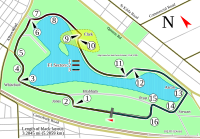
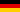

| Ronda | Fecha | Gran Premio | Mapa del circuito | Resultados |
|---|---|---|---|---|
| 1 | 6 de marzo |
Gran Premio de Australia Circuito de Albert Park Ganador 2004: |
 |
Libres 1: Libres 2: Pedro de la Rosa Libres 3:  Michael Schumacher Libres 4: Kimi Räikkönen Pole position: Ganador: 2.º puesto: Rubens Barrichello 3.º puesto: Fernando Alonso Vuelta rápida: Fernando Alonso (1:25.683) |
.png) Vitantonio Liuzzi
Vitantonio Liuzzi